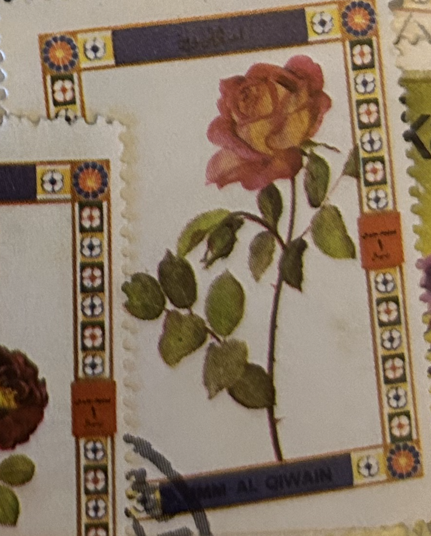
| SOURCE | TITLE| IMAGE MATCH | click to source page |
| Alamy | Umm al quwain hi-res stock photography and images - Alamy |  |
| eBay | Umm Al Quwain Mini Souvenir Sheet Imperf | eBay | 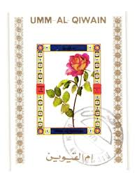 |
| Umm-Al-Qiwain | 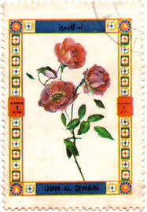 | |
| Alamy | Al letter hi-res stock photography and images - Alamy | 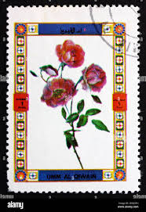 |
| Alamy | Thorn letter hi-res stock photography and images - Page 4 - Alamy | 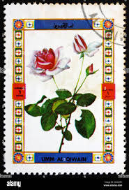 |
| Alamy | Umm al quwain old hi-res stock photography and images - Page 3 - Alamy |  |
| Alamy | Umm al quwain nature hi-res stock photography and images - Alamy |  |
| Pngtree | Rose Postcard Photos, Download HD Pictures - Pngtree | 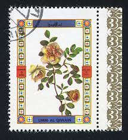 |
| Todocolección | umm al qiwain 1972 - hb rosas .- - Buy Stamps about flora on todocoleccion |  |
| Alamy | UMM AL-QUWAIN - CIRCA 1972: a stamp printed in the Umm al-Quwain shows Rose variety, Flower, circa 1972 Stock Photo - Alamy |  |
| Alamy | UMM AL-QUWAIN - CIRCA 1972: a stamp printed in the Umm al-Quwain shows Rose variety, Flower, circa 1972 Stock Photo - Alamy |  |
| Alamy | Thorn letter hi-res stock photography and images - Alamy |  |
| eBay | Manama Flora Flowers Roses set 1971 B-6F | eBay | 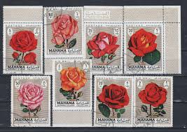 |
| eBay | Flowers Qatari Stamps for sale | eBay |  |
| eBay.de | Umm al Qiwain 1972 Flowers Roses Plants Nature sheet 16v perf MNH | eBay.de | 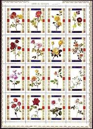 |
| eBay | Umm Al Qiwain 1972 Rose Fiori Piante Natura Fiori M S Mnh | eBay | 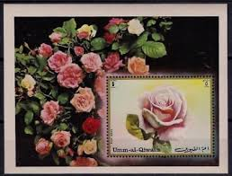 |
| Flowers - with overprint 5#2 (1972) - Qatar - LastDodo | 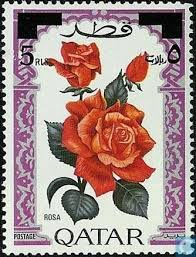 | |
| eBay | South African Postal Stamps for sale | eBay | 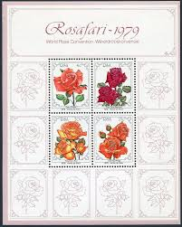 |
| eBay | STAMPS4COLLECTORS | eBay Stores |  |
| Phil India Stamps | Used Stamps, Set & M/s Worldwide| Phil India Stamps | 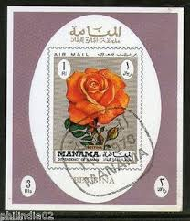 |
| vividagallery.com | Ajman Red Rose Rosier Des Indes Redoute Botanical Postage Stamp Round Beach Towel by Vivida Gallery - Vivida Gallery | 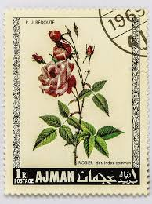 |
| eBay | Flowers Somali Stamps for sale | eBay | 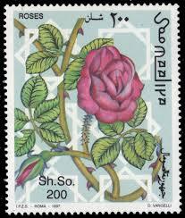 |
| Etsy | Vintage Libya Red Rose 1 Millieme Used Postage Stamp - Etsy | 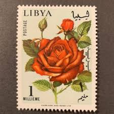 |
| Stamp Community Forum | Ajman 1972 Roses & Flowers Sets - Stamp Community Forum | 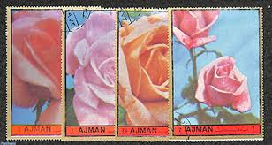 |
| Amazon.com | Amazon.com: Ajman 405A-410A (Complete.Issue.) fine Used/Cancelled 1969 Rosen (Stamps for Collectors) Plants/Mushrooms : Toys & Games | 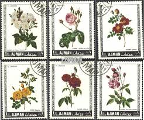 |
| Present from Syria between 1980-90 |  | |
| Shutterstock | Stamp Printed Libya Shows Libya History Stock Photo 1406628911 | Shutterstock | 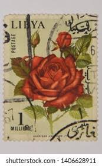 |
| eBay | Manama 1971 used Mi.A/H411 Blocksatz Blumen Flowers Rosen Roses | eBay | 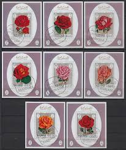 |
| eBay | AJMAN 1969 FLOWERS/ROSES SET OF 6 STAMPS PERF. MNH | eBay | 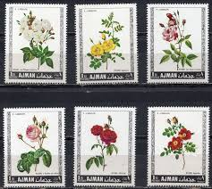 |
| Free stamp catalogue | Stamps from Somalia - Freestampcatalogue.com - The free online stampcatalogue with over 500.000 stamps listed. | 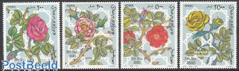 |
| Freestampcatalogue.com | Stamps from Umm al-Quwain - Freestampcatalogue.com - The free online stampcatalogue with over 500.000 stamps listed. | 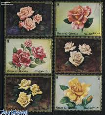 |
| postbeeld.com | Stamp 1979, South Africa Roses congress 4v, 1979 - Collecting Stamps - PostBeeld - Online Stamp Shop - Collecting | 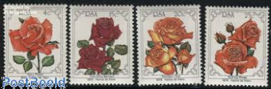 |
| eBay | 151.SOUTH AFRICA 1979 STAMP M/S WORLD ROSE CONVENTION. MNH | eBay | 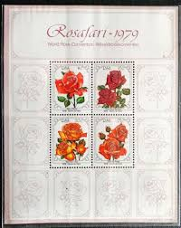 |
| eBay | Mint Never Hinged/MNH Individual South African Stamps (1961-Now) for sale | eBay | 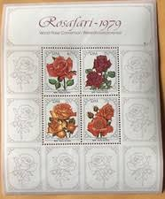 |
| eBay | Umm Al Qiwain Roses Flowers Plants Nature DeLuxe 16v DeLuxe MNH | eBay | 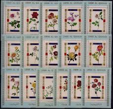 |
| Hello. So, I sorted them by country although there are some that I am confused. First I present Syria because there are many unused. Would appreciate some infos and if any has | 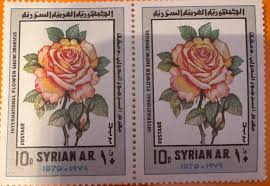 | |
| Stamp Collecting Blog | Demystifying CTO (Cancelled To Order) stamps | 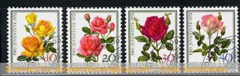 |
| eBay | Manama 1971 Roses Flowers Plants Nature DeLuxe 8v compl.series MNH DeLuxe | eBay | 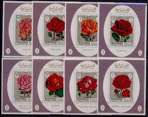 |
| eBay | Manama 1971 Roses Flowers Plants Horticulture Gardens 8v set Imperf MNH | eBay | 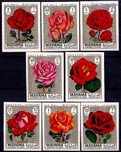 |
| rosegathering.com | Rose Stamps | 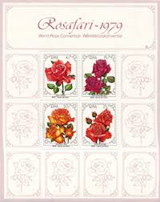 |
| eBay | Stamps South Africa 1979 Sc 525-28 Rosafari 1979 World Rose Convention Sheet MNH | eBay | 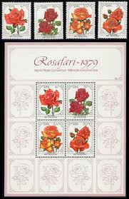 |
| Freestampcatalogue.com | Stamps from Syria - Freestampcatalogue.com - The free online stampcatalogue with over 500.000 stamps listed. | 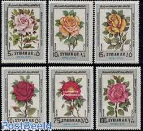 |
| PicClick | DHUFAR (STATE OF Oman) sheet of 8 Flower Stamps CTO Trucial State bogus $2.99 - PicClick | 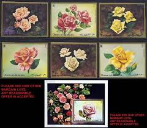 |
| Old-Stamps.com | Manama - Dependency of Ajman - Gypsy / الامارات العربية المتØدة | 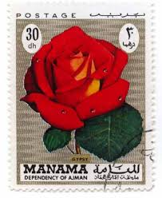 |
| eBay | Stamp RSA003 1979 South Africa – World Rose Convention, m/s set of 4 MNH | eBay | 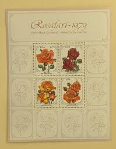 |
| Colnect | Stamp: Rose (Rosa hybrida) (Iraq(Kurdish New Year) Mi:IQ 593,Sn:IQ 536,Yt:IQ 563,Sg:IQ 873 📮 | 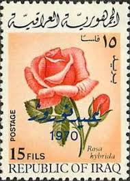 |
| Pin by Manu Häusle on Briefmarken Blumen | Vintage postage, Stamp printing, Expressive art | 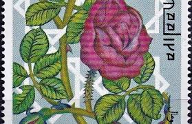 | |
| StampData | Stamps of South Africa, 25c denom | StampData | 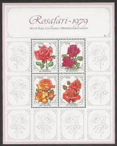 |
| Free stamp catalogue | Stamps from Umm al-Quwain - Freestampcatalogue.com - The free online stampcatalogue with over 500.000 stamps listed. | 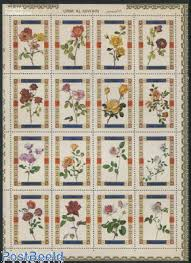 |
| eBay | Black Flowers European Stamps for sale | eBay | 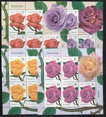 |
| eBay | Umm al Qaiwain 675A-680A MNH 1972 Ros | eBay | 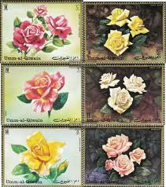 |
| eBay | Manama Flora Flowers Rose Souvenir Sheet 1970 B-6F | eBay | 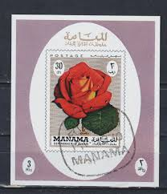 |
| efilatelija.lt | Fujeira stamps (1972) for sale. Roses | 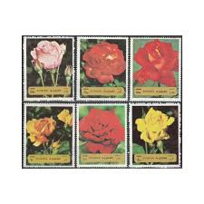 |
| eBay | 123.MANAMA 1971 SET/8 IMPERF DELUXE STAMP M/S ROSES .MNH | eBay | 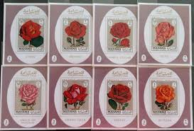 |
| Collect GB Stamps | Posters for 1991 : Collect GB Stamps | 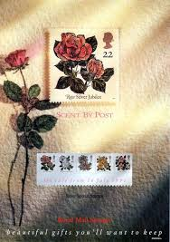 |
| eBay | Flowers Multi-Color Australian Stamps for sale | eBay | 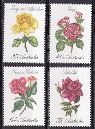 |
| South Africa Sg 466-469 Mnh Mint Stamp Set 1979 Rosafari Rose Convention | 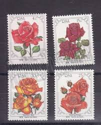 | |
| eBay | Lot of Beautiful International Mint Stamps for a Collector Vintage 1971-1999 | eBay | 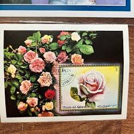 |
| eBay | MANAMA Souvenir Sheets of Roses Lot of 8 | eBay | 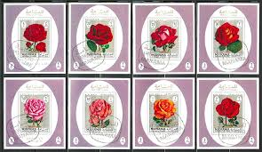 |